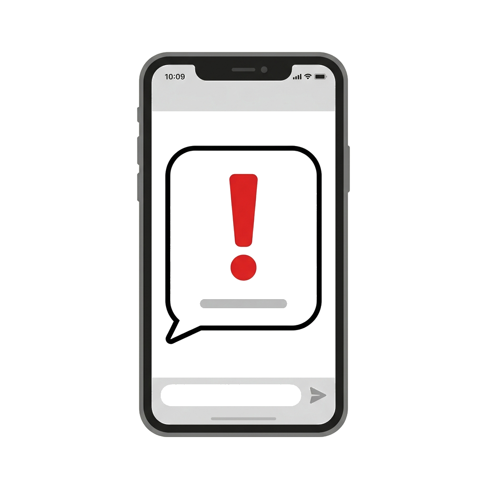
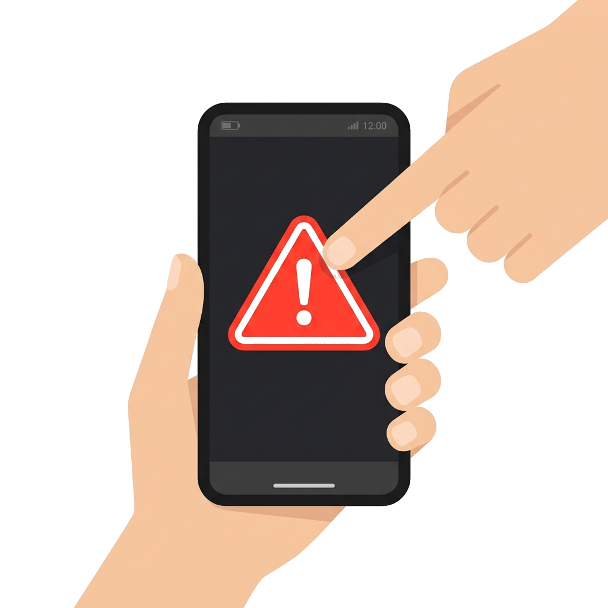
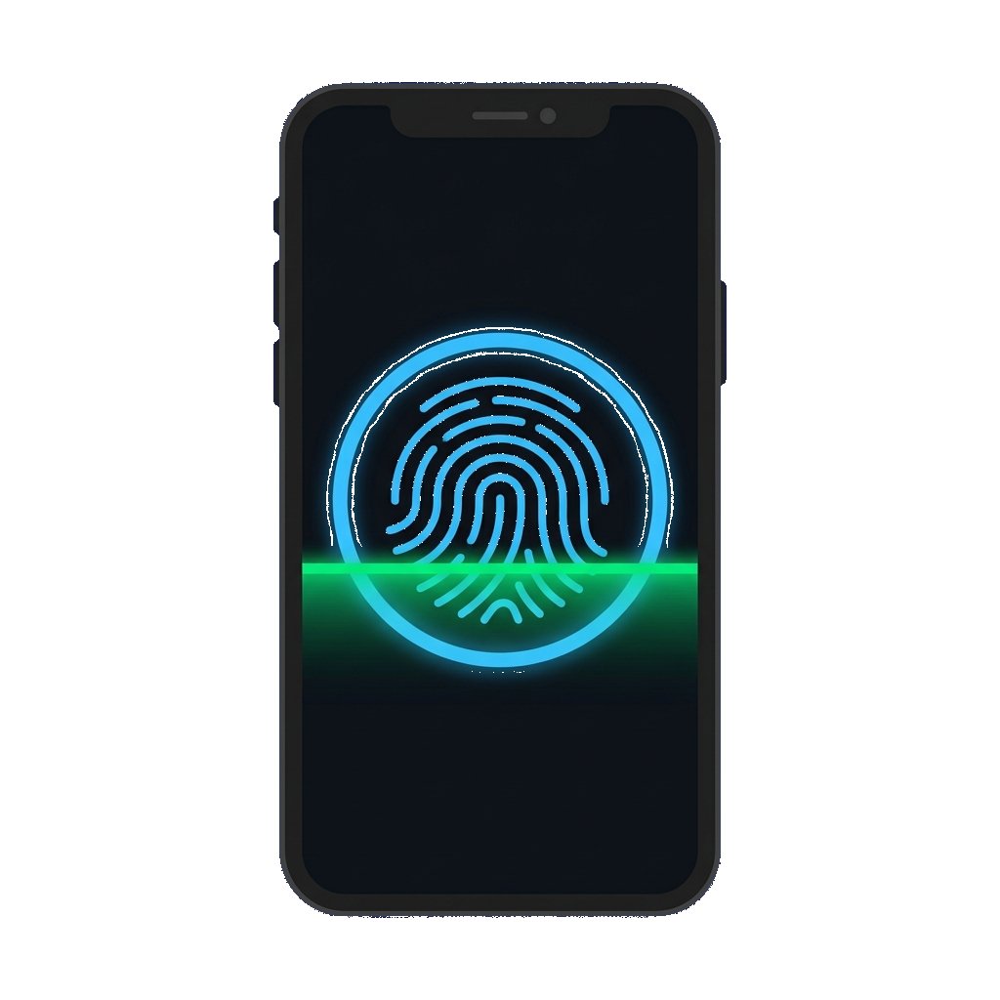
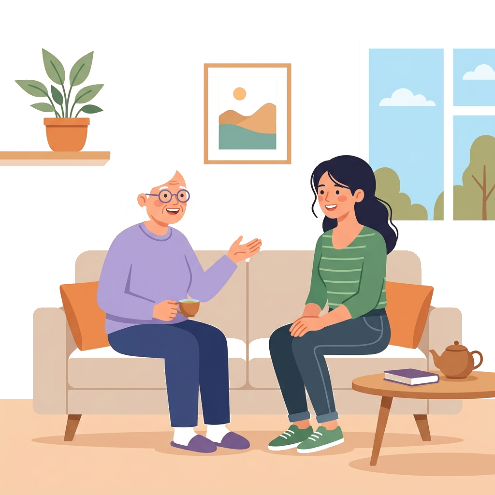
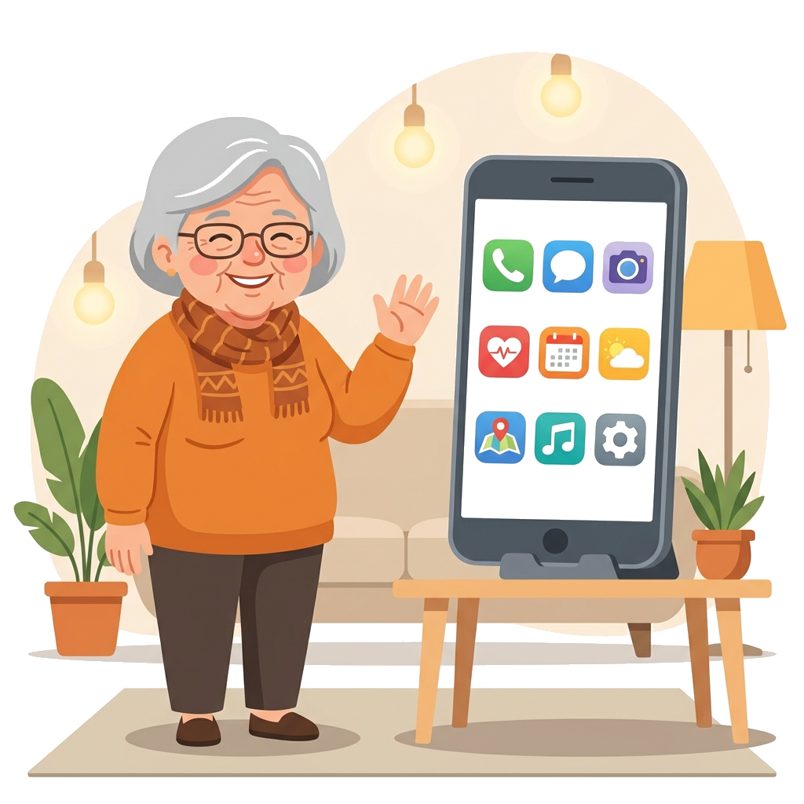
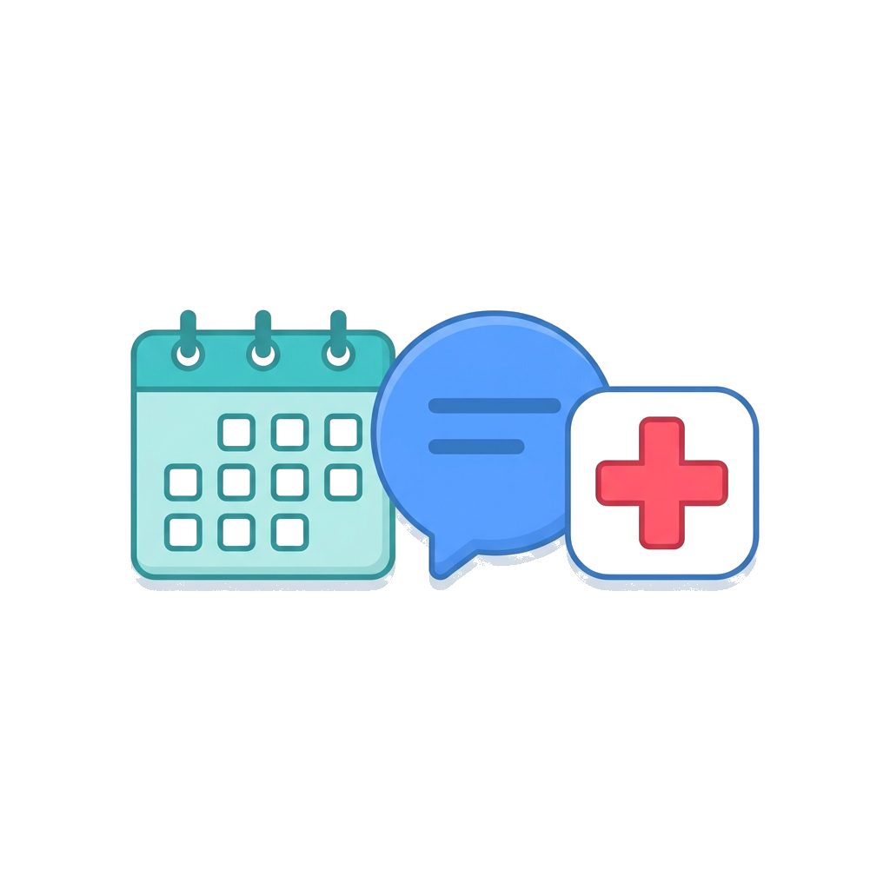

O seu novo caderno de compromissos! Sabe aquele calendário de papel que costumamos pendurar na cozinha ou a agendinha de telefone que levamos na bolsa? O Google Agenda é exatamente isso, só que dentro do seu celular! A grande vantagem é que ele avisa você — o seu celular vai tocar ou vibrar para te lembrar quando o horário do remédio, do exame médico ou do aniversário de um neto estiver chegando.
Procure na tela do seu celular por um desenho de um calendário. Ele costuma ser branco com o número "31" no meio, rodeado pelas cores azul, vermelho, amarelo e verde. Encontrou? Dê um toque suave nele com o dedo.
Quando o aplicativo abrir, você verá os dias do mês. Para anotar algo novo, basta olhar para o canto de baixo da tela (geralmente do lado direito). Você vai ver um botão redondo e colorido com um símbolo de "mais" (+).
Toque nesse botão. Ele serve para "adicionar" algo novo. Em seguida, toque na opção chamada "Evento".
A agenda abriu uma página em branco para você preencher. Bem no topo, tem uma linha piscando onde está escrito "Adicionar título".
Toque ali e o teclado do celular vai aparecer. Digite o que você precisa lembrar. Por exemplo: "Tomar remédio da pressão", "Consulta com o cardiologista", ou "Almoço de domingo".
Logo abaixo do nome que você digitou, você verá o dia de hoje e o horário. Para mudar o dia, dê um toque em cima da data — um pequeno calendário vai aparecer. Para mudar a hora, toque em cima do horário — um relógio vai aparecer na tela.
Depois de colocar o nome, o dia e a hora, olhe para a parte bem de cima da tela, do lado direito. Você vai ver a palavra "Salvar". Dê um toque nela. Pronto! A tela vai fechar e você verá o seu compromisso anotado no dia correto.
Se você anotar algo no dia errado ou escrever uma letra a mais, não tem problema nenhum! O celular não vai estragar se você apertar o botão errado. Se precisar apagar, é só tocar em cima da anotação que você fez, procurar o desenho de uma lixeira (que fica no topo da tela) e tocar nela. O compromisso sumirá na mesma hora.
Lembra daquele cartãozinho de papel do SUS e da sua carteirinha de vacinação? Agora, você pode ter tudo isso guardado em segurança dentro do seu celular! O aplicativo Meu SUS Digital é como se fosse uma pasta com todo o seu histórico de saúde, disponível a qualquer hora, sem precisar sair de casa.
Procure na tela do seu celular um aplicativo azul, com o desenho de uma cruz branca e escrito "Meu SUS Digital". Dê um toque nele.
Ao abrir o aplicativo, você verá um botão azul escrito "Entrar com o Gov.br". Dê um toque nele. Só então o aplicativo vai pedir o seu CPF e a senha cadastrada — a mesma usada para aposentadoria e outros serviços do governo. Se você não souber a sua, peça ajuda a um familiar de confiança.
Quando o aplicativo abrir, olhe para a parte de baixo da tela e toque em "Perfil" (o ícone com o desenho de uma pessoa). Depois, dê um toque na opção escrita "Cartão Nacional de Saúde".
O seu cartão do SUS vai aparecer grande na tela, com o seu nome e o seu número. Quando a recepcionista do posto de saúde pedir o seu cartão, é só mostrar essa tela para ela!
Quer saber se está na hora de tomar o reforço da vacina da gripe ou da COVID-19? Na tela principal, procure por um botão onde está escrito "Vacinas".
Ao tocar nesse botão, o celular vai mostrar uma lista com todas as vacinas que você tomou nos últimos anos. Se você tocar em cima do nome de uma vacina, ele mostra até o dia exato em que você foi ao posto!
Se você rolar a tela um pouquinho para baixo, vai encontrar outras opções muito úteis: "Exames" (resultados de exames de sangue feitos pelo SUS) e "Medicamentos" (remédios que você retirou no posto ou na farmácia). É uma ótima forma de lembrar o nome daquele remédio que o médico passou!
Não se preocupe se esquecer a carteirinha de papel em casa! Hoje em dia, todos os postos de saúde e hospitais aceitam o cartão do SUS direto na tela do seu celular. É um documento oficial e tem a mesma validade do papel. O seu celular é o seu maior aliado!
A sala de estar no seu celular! Se antes a gente precisava ligar do telefone fixo ou esperar uma visita para conversar, hoje o WhatsApp permite que você converse com filhos, netos e amigos a qualquer hora, de graça! Vamos aprender juntos?
Cansou a vista e não quer digitar? É só falar! Quando estiver na conversa com alguém, olhe para o canto de baixo da tela, do lado direito. Você vai ver um botão verde com o desenho de um microfone.
Coloque o dedo em cima do microfone, segure apertado e comece a falar. Quando terminar, é só tirar o dedo da tela — a mensagem vai sozinha!
Você pode conversar vendo o rosto da pessoa, como se estivessem na mesma sala! Abra a conversa de quem você quer ligar. Lá no topo da tela, procure pelo desenho de uma câmera de vídeo. Dê um toque nela e aguarde a pessoa atender.
Viu uma flor bonita no jardim? Na mesma linha onde você digita a mensagem, procure pelo desenho de um clipe de papel ou de uma câmera fotográfica. Se tocar na câmera, você tira a foto na mesma hora. Se tocar no clipe, escolhe uma foto já guardada no celular.
Todo mundo manda mensagem para a pessoa errada de vez em quando. Coloque o dedo em cima da mensagem que você mandou e segure por um tempinho até ela ficar marcada. Lá em cima vai aparecer o desenho de uma lixeira — toque nela e escolha "Apagar para todos".
Está achando as letras muito miúdas? Na tela inicial do WhatsApp, toque nos três pontinhos lá em cima e vá em "Configurações" → "Conversas" → "Tamanho da fonte". Escolha a opção "Grande". Pronto, a leitura vai ficar muito mais confortável!
O WhatsApp é maravilhoso, mas lembre-se: bancos e órgãos do governo nunca pedem senhas ou dinheiro por mensagem. Se alguém pedir dinheiro emprestado pelo WhatsApp, ligue para a pessoa pelo número normal para confirmar antes de fazer qualquer coisa!
O celular é uma ferramenta maravilhosa, mas assim como no mundo real, é preciso tomar alguns cuidados para não cair em armadilhas. Com algumas dicas simples, você vai se sentir muito mais seguro e tranquilo ao usar o seu aparelho!
Se você receber uma mensagem de um número desconhecido dizendo que ganhou um prêmio, que há um problema com seu banco ou que um familiar está em apuros, não responda e não clique em nenhum link.
Golpistas usam essas histórias para assustar as pessoas. A melhor coisa a fazer é ligar diretamente para o banco ou para o familiar pelo número que você já conhece.

A senha do seu celular, do seu banco e do gov.br é como a chave da sua casa: é só sua! Nenhum banco, nenhum funcionário do governo e nenhum técnico de celular precisa saber a sua senha para te ajudar.
Às vezes chega uma mensagem com um link dizendo "clique aqui para ver sua fatura" ou "acesse aqui para receber seu benefício". Tenha muito cuidado! Antes de clicar em qualquer link, pergunte a um filho, neto ou pessoa de confiança se aquilo parece verdadeiro.

Coloque uma senha ou o desbloqueio pela digital do dedo na tela inicial do seu celular. Assim, se você esquecer o aparelho em algum lugar, ninguém consegue acessar os seus dados. Vá em Configurações → Segurança → Tela de bloqueio.

Recebeu algo estranho? Não sabe se pode clicar? Pare tudo e pergunte a alguém de confiança antes de fazer qualquer coisa. Não existe vergonha em pedir ajuda! Golpistas contam com a pressa e o medo das pessoas.

Bancos, o governo e operadoras de telefone nunca ligam pedindo sua senha, código de segurança ou para você instalar um aplicativo. Se alguém fizer isso, desligue imediatamente e ligue para o número oficial da instituição que você já conhece.
Este site nasceu de um desejo simples: fazer com que a tecnologia seja acessível para todos, independentemente da idade. Acreditamos que aprender a usar o celular não precisa ser complicado nem assustador.
Este é um espaço criado especialmente para quem está dando os primeiros passos no mundo digital. Aqui você encontra guias simples, escritos com linguagem clara e direta, para aprender a usar os aplicativos mais úteis do dia a dia.
Cada guia foi pensado com carinho, com explicações passo a passo e imagens que mostram exatamente onde tocar na tela. Sem termos difíceis, sem pressa.
Este site é para você que talvez nunca tenha usado um celular moderno antes, ou que usa há algum tempo mas ainda tem dúvidas sobre certas funções. É para avós, pais, tios e vizinhos que querem se sentir mais seguros e conectados com a família.
Também é um ótimo recurso para filhos e netos que querem ensinar seus familiares de forma paciente e organizada!

Atualmente, o site conta com guias completos para três aplicativos essenciais: o Google Agenda, para nunca mais esquecer um compromisso; o Meu SUS Digital, para ter seu cartão de saúde sempre à mão; e o WhatsApp, para se manter próximo de quem você ama.
Além disso, há uma página com Dicas de Segurança, ensinando como se proteger de golpes e manter seus dados seguros. Novos conteúdos serão adicionados com o tempo!

Nunca é tarde para aprender! Cada pequeno passo que você der no mundo digital é uma conquista. Se tiver dúvidas, volte aqui quantas vezes precisar. Estamos aqui para ajudar.